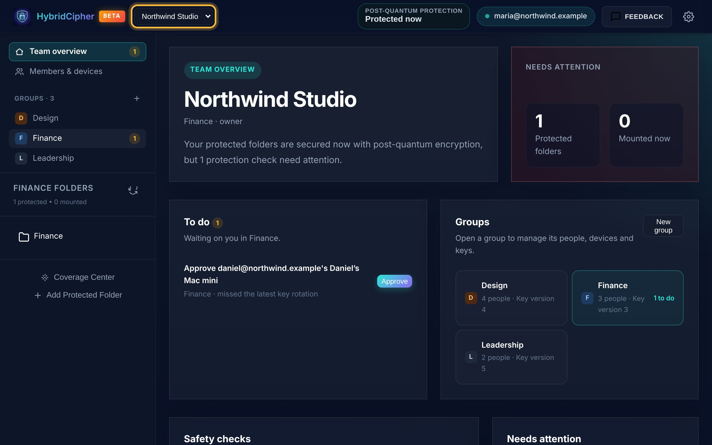
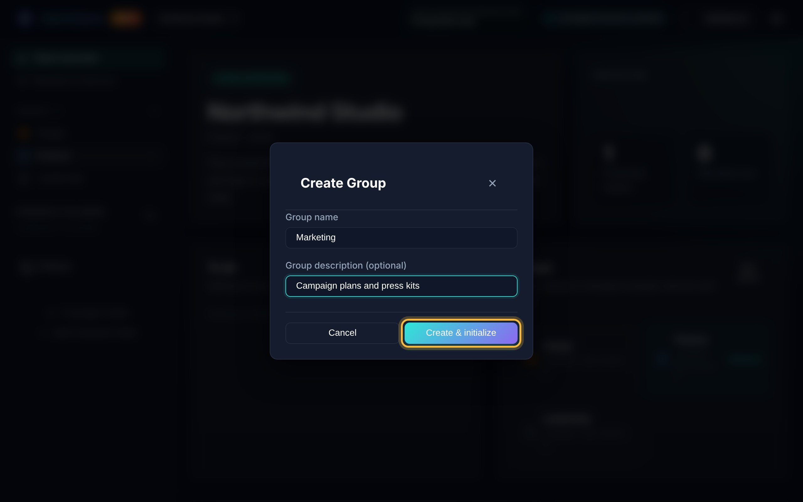
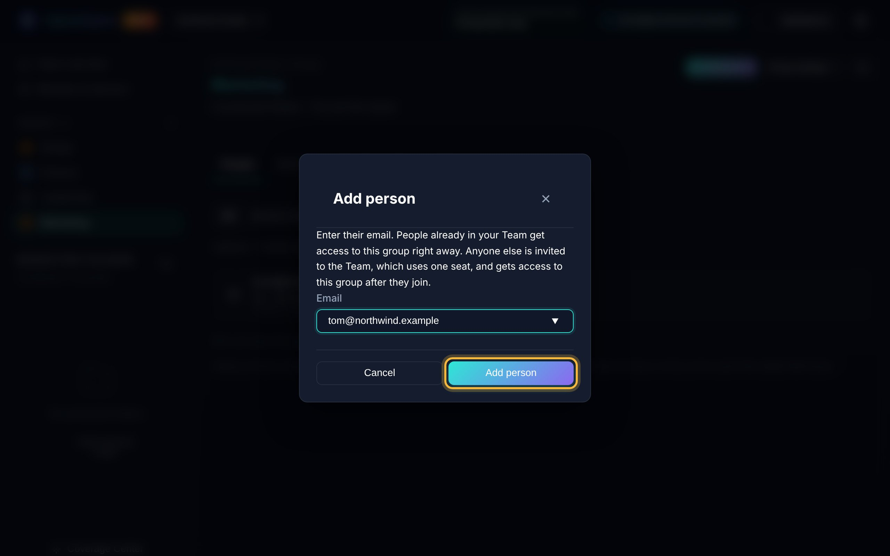
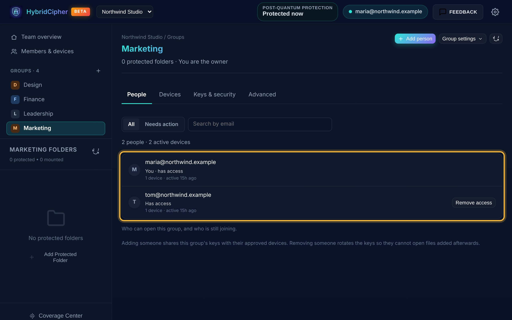
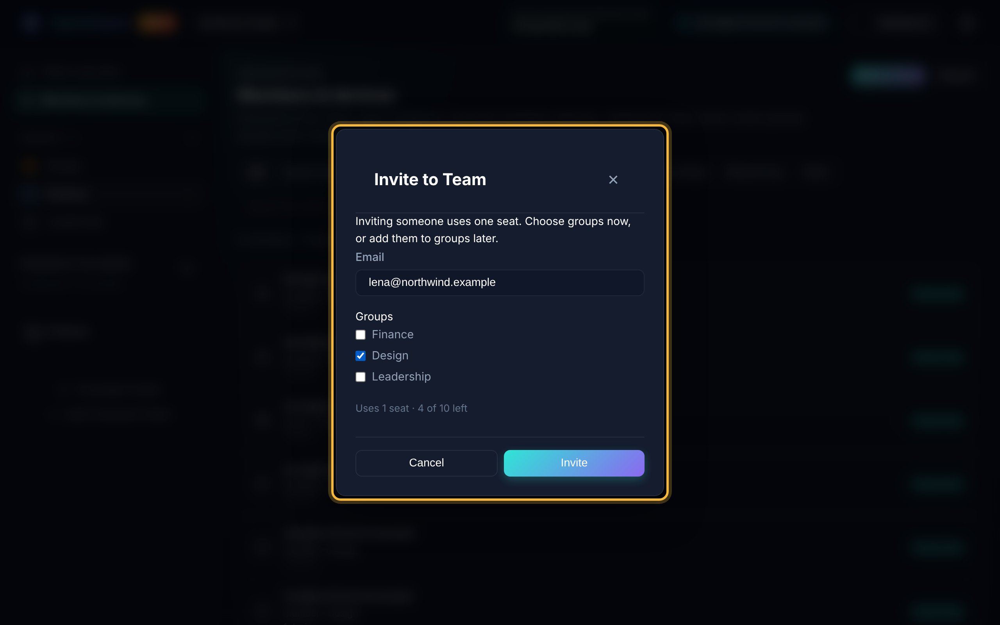
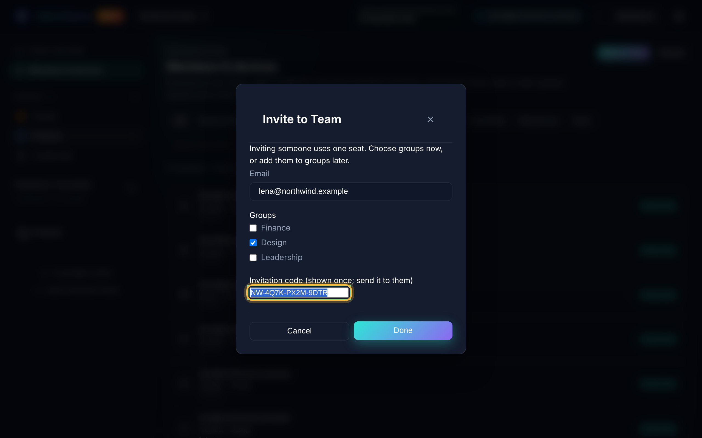
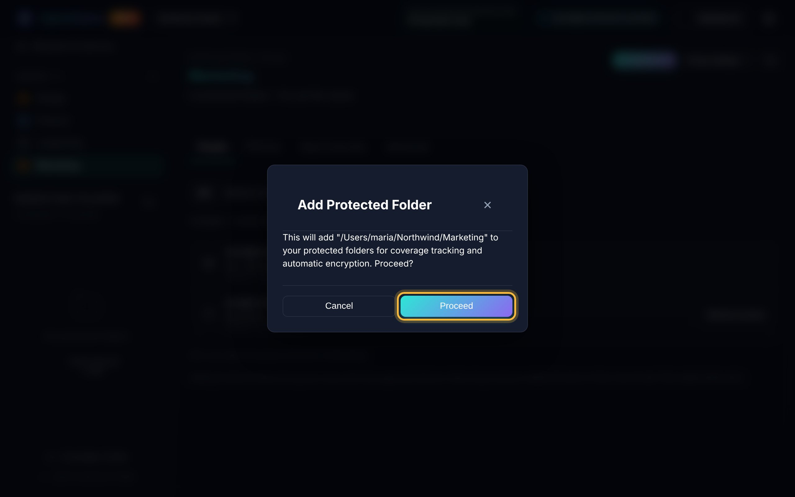
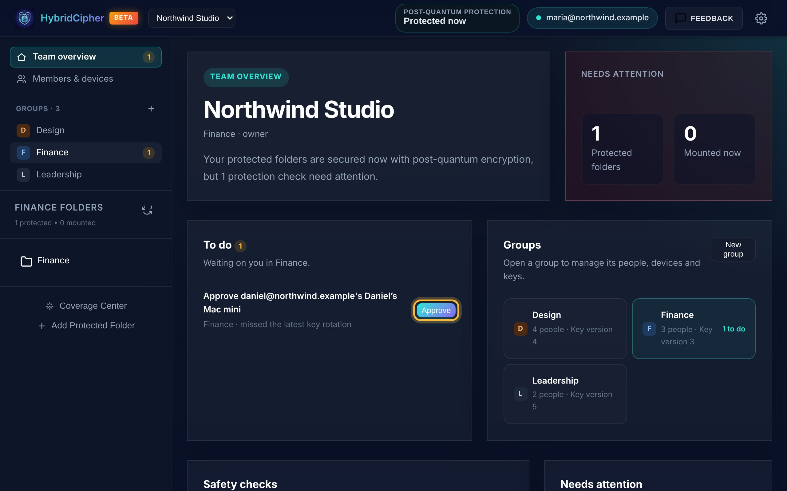
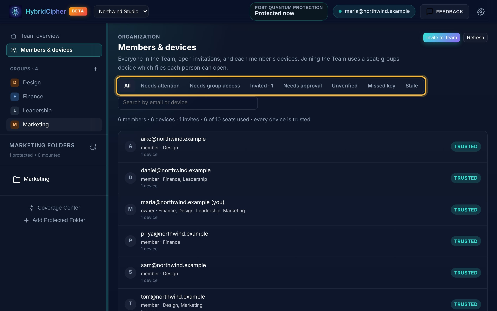
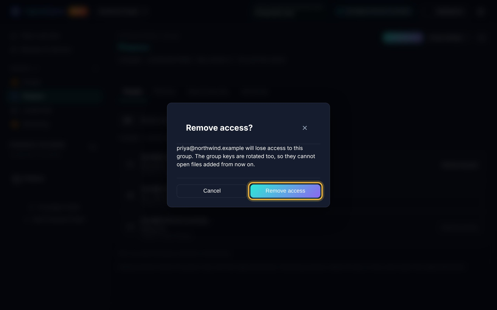

Run your team's shared folders
Groups decide who can open which files. As an owner or admin, you create groups, add people to them, protect each group's folders, and approve the devices people use.
- For Team owners and admins
- About 10 minutes
- macOS and Windows
Before you start. Sign in with your Team account. Team administration works only on a verified device. If the app asks, verify this device from a device you already trust, or confirm it with your password.
Quick walkthrough
-
Open your Team workspace
Choose your organization in the workspace menu at the top of the window. Team overview shows what is waiting on you under To do, and all your groups under Groups.
The group selected in the sidebar is the one you're working in. Its protected folders are listed below the groups.

Team overview: what's waiting on you, and your groups. -
Create a group
Make one group for each set of people who share files, such as a department or a client project.
- Click New group in the Groups panel, or + next to Groups in the sidebar.
- Enter a name and, if you like, a short description.
- Click Create & initialize. When it says Group ready, close the window.

The new group appears in the sidebar and is selected. -
Add people to the group
Select the group in the sidebar and click Add person. Enter their email and click Add person.
- People already in your Team get access right away.
- Anyone else is invited to the Team, which uses one seat. They get access after they join.

Add someone by email. 
The People tab lists everyone with access. -
Invite someone new to the Team
Open Members & devices and click Invite to Team. Enter their email and tick the groups they should join. You can also add groups later.
Click Invite. The app shows an invitation code once. Copy it and send it to them securely. They paste it under Joining an existing Team? and click Join Team.

Inviting someone uses one seat. 
The code is shown only once. -
Protect the group's shared folder
With the group selected, click Add Protected Folder in the sidebar. Choose the folder and click Proceed.
The folder is protected with the group's keys, so everyone with access to the group can open its files on their approved devices.

The folder is listed under the group's folders in the sidebar. -
Approve new devices
When someone signs in on a new computer, it waits for approval and shows up under To do on Team overview. Click Approve to share the group's keys with that device.

The sidebar badge counts what's waiting on you. Check first. Approve a device only when you know it belongs to that person, for example because they told you they just set up a new computer.
-
Review members and devices
Members & devices lists everyone in the Team, the groups they're in, their devices and open invitations. Use the filters to find what needs you:
- Needs approval: devices waiting for you.
- Unverified: devices whose fingerprint hasn't been checked.
- Missed key and Stale: devices that missed a key update or haven't been used for a while.
From each member you can Revoke a lost device, use Add to group…, or Remove from Team.

Every device here is trusted, and one invitation is open. -
Remove someone's access
Open the group, find the person on the People tab and click Remove access. The group's keys are rotated in the same step, so they can't open files added from now on.

Removing access also rotates the group's keys. Leaving the company? Use Remove from Team in Members & devices. It frees their seat and takes them out of their groups, but doesn't rotate keys. Rotate each group's keys afterwards from its Keys & security tab, so they can't open files added from now on.